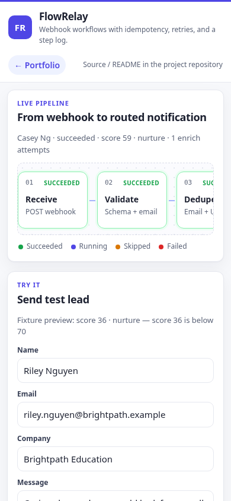
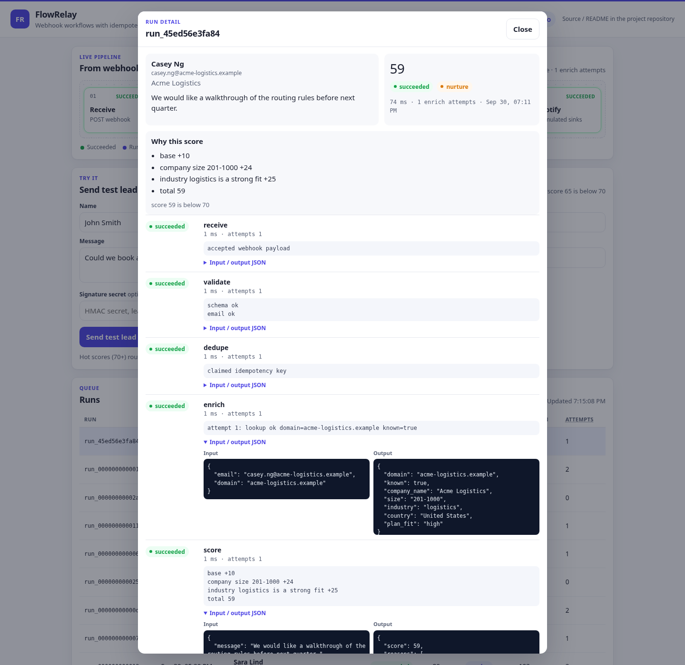

FlowRelay
Webhook in, routed lead out, with a step log for every run. FlowRelay is a small code-first alternative to an n8n/Zapier/Make lead intake: the same stages, plus idempotency, bounded retries, retention, and a page you can demo without connecting real Slack or Google accounts.
Fictional companies only (Acme Logistics, Globex Analytics, Initech, and similar). Nothing in the sample data is a real person or a live integration.
Overview
A website form or CRM posts JSON to POST /api/webhook/lead. The handler checks size, rate limit, and an optional HMAC, stores a run, and returns 202 with a run id. A background worker validates the lead, drops same-day duplicates, looks the email domain up in a local company fixture, scores it from 0 to 100, and routes it to sales, nurture, or support. Notify appends a simulated Slack message, a sheet row, and a CRM upsert. The UI shows the pipeline, the run table, the outbox, the sheet (including CSV), and 24-hour stats.
Problem
- Form and CRM webhooks fail open: a blip in enrichment drops the lead, and nobody can see which step died.
- The same person submits twice in a day and two sales tasks get created.
- Routing lives in a spreadsheet of opinions, so a "hot" lead and a support complaint land in the same queue.
Solution
- Accept the webhook onto a SQLite queue and return immediately. A worker records status, duration, attempts, logs, and JSON for each step.
- Idempotency key is the email plus the UTC day the webhook was accepted. A repeat is stored as a skipped run instead of a second notification.
- Score with explicit rules (company size, industry fit, message keywords) and route support keywords ahead of the hot-score threshold. Enrichment retries a simulated timeout with exponential backoff, up to three attempts.
Result
- The webhook responds with a run id while the pipeline is still in flight. The runs table updates on its own.
- A second submit of the same email on the same UTC day is visible as
skipped, and the sheet does not gain another row. - Operators can open a run and read why it scored the way it did, including a failed validation or a retried enrich, and download the sheet as CSV.
/metricsexposes the same counts as Prometheus text.
Features
- Seven-step pipeline: receive, validate, dedupe, enrich, score, route, notify.
- Optional HMAC-SHA256 (
X-FlowRelay-Signature: sha256=<hex>of the raw body). Off whenFLOWRELAY_WEBHOOK_SECRETis empty, which is the demo default. - Per-IP write limit of 10 requests per minute, honoring
X-Real-IP. Request bodies over 8 KB are rejected. - Flaky enrich fixture: about 15% of first attempts time out, then retry. The attempt log records the backoff.
- Rules score capped at 100. Hot (70+) goes to sales, support keywords go to support, everything else to nurture.
- Simulated Slack outbox (one channel per route), sheet with
GET /api/sheet.csv, and CRM upsert by email. - Retention caps (default 500 runs, outbox rows, and sheet rows) so the SQLite file cannot grow without bound.
- Crash recovery: on startup,
runningrows are queued again. Notify will not double-write a run that already reached the outbox. - Self-contained UI. Relative URLs, no CDN, user-supplied text rendered with
textContent. - About 40 historical runs are inserted the first time the database is empty.
- An importable n8n workflow in
n8n/for the same shape of graph.
Architecture
POST /api/webhook/lead
|
| 202 {run_id}
v
SQLite run (queued) ---> worker thread
|
v
receive -> validate -> dedupe -> enrich -> score -> route -> notify
| |
v v
Slack outbox sheet + CRMSee docs/architecture.md for the sequence diagram, the idempotency rule, and the retry policy.
The worker is one thread. SQLite writes take a process lock. GET /healthz does not touch the database. The page polls GET /api/runs every 3 seconds. Open /?run=<id> to show that run's timeline.
Tech stack
- Python 3.9+ (developed to run on 3.9 and 3.11+)
- FastAPI 0.115 and Uvicorn 0.30
- SQLite via the standard library
- One static page: HTML, CSS, and vanilla JS. Charts are inline SVG
- pytest for the pipeline and the HTTP API
- Docker image runs as a non-root user. Compose file included
- GitHub Actions workflow: ruff, pytest, and
docker build
Run locally
python3 -m venv .venv
source .venv/bin/activate
pip install -r requirements.txt -r requirements-dev.txt
pytest
./run.shOpen http://127.0.0.1:18802/. The default port is 18802 (PORT). Use a trailing slash if you put the app behind a prefix, and keep links relative (api/..., static/...).
examples/curl.sh posts a lead with and without a signature. Set BASE if the service is not on port 18802.
Docker Compose
Docker is optional. The image listens on 0.0.0.0:18802 inside the container and stores SQLite in a named volume.
docker compose up --buildThe container healthcheck calls GET /healthz. The process user is flowrelay, not root.
Configuration
| Variable | Default | Purpose |
|---|---|---|
HOST | 127.0.0.1 | Bind address. Compose sets 0.0.0.0. |
PORT | 18802 | Bind port. |
DATA_DIR | ./data | Directory for flowrelay.db. |
FLOWRELAY_WEBHOOK_SECRET | empty | HMAC secret. Empty disables the check. |
FLOWRELAY_ENRICH_FAIL_RATE | 0.15 | Chance the first enrich attempt times out. |
FLOWRELAY_ENRICH_FORCE_FAILURES | unset | If set, fail the first N enrich attempts on every run (tests and demos). |
FLOWRELAY_BACKOFF_BASE | 0.05 | First retry delay in seconds. Each later retry doubles it. |
FLOWRELAY_MAX_RUNS | 500 | How many runs to keep. |
FLOWRELAY_MAX_OUTBOX | 500 | How many outbox rows to keep. |
FLOWRELAY_MAX_SHEET | 500 | How many sheet rows to keep. |
FLOWRELAY_SEED | 1 | Insert historical runs when the database has none. |
LOG_LEVEL | info | Uvicorn log level. |
Scoring, short version: base 10, plus size (6 to 30), plus industry (0, 8, 14, or 25), plus at most one hit each for urgent (15), enterprise (15), budget (12), integration (8), pricing (6), and demo (6). Cap 100. Support keywords win over the score. Otherwise 70 or more is sales and the rest is nurture.
API endpoints
| Method | Path | Notes |
|---|---|---|
GET | / | Demo UI |
GET | /healthz | {"status":"ok",...} |
POST | /api/webhook/lead | JSON lead. 202 {"run_id","status":"queued"}. Rate limit 10/min/IP. Body ≤ 8 KB. |
POST | /api/enrich | {email} or {domain}. Local fixture only. No network fetch. |
GET | /api/runs?limit= | Newest runs. limit is clamped to 1–200. |
GET | /api/runs/{id} | Full step timeline. |
GET | /api/outbox | Simulated Slack messages by channel. |
GET | /api/sheet | Simulated sheet rows. |
GET | /api/sheet.csv | Same rows as CSV. Formula-leading cells are prefixed. |
GET | /api/stats | Last 24 hourly buckets, success rate, p50/p95, counts by route. |
GET | /api/sample-lead | A random fictional lead plus a fixture score preview. |
GET | /metrics | Prometheus text. |
Lead JSON fields: name, email, company, message, and optional source (default webhook). A well-formed JSON object with a bad email still returns 202; the run then fails in the validate step. Malformed JSON is 400 and is not queued.
Signature header, when the secret is set:
X-FlowRelay-Signature: sha256=<hex HMAC-SHA256 of the raw request body>A missing or wrong signature is 401 and does not create a run.
Tests
pytestCoverage includes validation, the UTC-day idempotency key, enrich retry and give-up, score and route boundaries, webhook 202 through to a finished run, XSS strings stored in the API but not echoed by the HTML shell (the page assigns textContent), the rate limit, retention caps, CSV export and formula neutralization, HMAC, and the n8n workflow shape.
Deployment
The live demo is a systemd service on a small VPS, behind nginx, with the URL prefix stripped:
location /portfolio/flowrelay/ {
proxy_pass http://127.0.0.1:18802/;
proxy_set_header Host $host;
proxy_set_header X-Real-IP $remote_addr;
proxy_set_header X-Forwarded-Proto $scheme;
}proxy_pass has a trailing slash so the app sees / while the browser stays on /portfolio/flowrelay/. The UI uses relative URLs for that reason. Public entry for this demo: https://3.1.79.63/portfolio/flowrelay/.
Install sketch (not applied by this repository):
sudo mkdir -p /opt/portfolio/flowrelay
sudo rsync -a --exclude .venv --exclude data ./ /opt/portfolio/flowrelay/
sudo chown -R ec2-user:ec2-user /opt/portfolio/flowrelay
sudo -u ec2-user python3 -m venv /opt/portfolio/flowrelay/.venv
sudo -u ec2-user /opt/portfolio/flowrelay/.venv/bin/pip install -r /opt/portfolio/flowrelay/requirements.txt
sudo cp deploy/flowrelay.service /etc/systemd/system/flowrelay.service
sudo systemctl daemon-reload
sudo systemctl enable --now flowrelayThe unit runs as ec2-user, sets PORT and DATA_DIR, restarts always, sets MemoryMax=150M, and sets NoNewPrivileges=yes. Do not put a real webhook secret in git. If you want HMAC, add Environment=FLOWRELAY_WEBHOOK_SECRET=... in a root-owned drop-in.
This tree does not install the unit or edit nginx. Memory target for the process is under 80 MB RSS.
Screenshots



Screenshots are from headless Chrome against the local service (1440×1000, 390×844, and the run-detail dialog opened with ?run=).